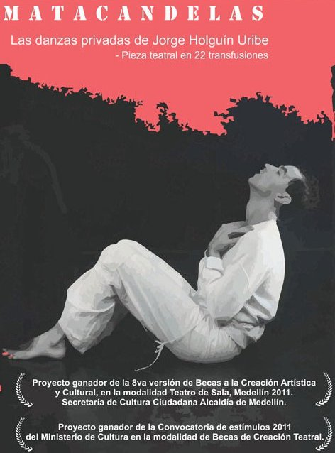

Información: (+57) 350 215 11 00 (WhatsApp)
- Proyecto ganador de la 8va versión de Becas a la Creación Artística y Cultural, en la modalidad Teatro de Sala, Medellín 2011. Secretaría de Cultura Ciudadana Alcaldía de Medellín.
- Proyecto ganador de la Convocatoria de estímulos 2011 del Ministerio de Cultura en la modalidad de Becas de Creación Teatral.
- Festival Internacional de Teatro, Manizales, Colombia 2012
- Festival Iberoamericano de Teatro de Bogotá, Colombia 2012
- Festival Internacional SUDAKA, Quito, Ecuador 2012
- Festival de teatro Les Translatines en Bayona - Francia 2013
- Las danzas privadas del Matacandelas Por: Mónica Quintero Restrepo
- La bella imperfección de Matacandelas Por: Diego León Giraldo
- De mi sensación existencial, luego de una resurrección teatral… Por: El noctívago
- Las danzas privadas de Jorge Holguín Uribe Por: Sandro Romero Rey
- Prólogo de Las danzas privadas - Por: Cristóbal Peláez González
Las danzas privadas de Jorge Holguín Uribe
Pieza teatral en 22 transfusiones
Creación Colectiva
 |
|
Pieza teatral en 22 transfusiones.
Creación colectiva sobre la vida y obra de Jorge Holguín Uribe.
Los elementos estéticos y biográficos de Jorge Holguín Uribe, danza y escritura, se presentan como obra dramática, con suficiente colorido de humor, juego y música en vivo. Su punto de partida es la ordalía del autor, visitante asiduo durante 18 meses del Hospital de Hvidovre, Copenhague, donde murió en las peores condiciones de salud en 1989. En los últimos meses, llevó un diario de enfermedad, un relato casi novelesco donde un mono de felpa, impide que su agonía esté sellada por la depresión. Un testimonio amable, humorístico, versátil.
El segundo eje del edificio dramático lo constituye “Danzas privadas”, un manual de rituales con ejercicios de baile, con la idea de hacer la danza popular y accesible a todos. Ejecutada por actores, no por profesionales de la danza, se constituye en una especie de manifiesto estético sobre la permanente y cotidiana actitud del artista respecto al mundo y a su obra.
El tercer eje dinámico está puesto en la búsqueda obsesiva de Jorge Holguín Uribe por encontrar paliativos para el virus, que para aquellos años todavía no acumulaba progresos investigativos notables.
La idea base está anclada en la quintaesencia teatral: hombre versus fatum, y en esta querella el creador como un vencedor derrotado. Nuestro personaje fue un gigante de siete suelas que se constituyó en el más internacional de los colombianos.
"Aquí, disciplinas variadas como la música, la danza y la actuación se funden en un lenguaje corporal que invita al espectador a conocer más sobre la vida de este gran maestro del arte colombiano."
Jorge Holguín por él mismo
"Una vez fui decapitado, la segunda fui cortado en pedazos, en la siguiente hube de beber plomo derretido y mis intestinos fueron echados a los perros mientras yo colgaba de una cruz al rojo vivo. Cada vez un ángel del Señor venía a devolverme la vida, meticulosamente rescataba cada una de mis partes y reconstituía mi cuerpo. Igualmente me daba ánimo para no flaquear ante los torturadores romanos. A mi cuarta muerte no vino el ángel... ya era mi tiempo". (Leyenda de San Jorge)
Nací el 5 de Enero de 1953 en Bogotá, terminé bachillerato en el Helvetia en 1969. En las vacaciones, a mitad de año, viajaba con mi familia por Europa y América del Sur. Luego pasé un año en un kibutz en Israel, aprendiendo mucho y participando en todo, escribiendo y tomando fotos (1970).
Me gradué en Matemáticas Puras en la Universidad Javeriana con la tesis "Arte y Matemáticas" (1974). Simultáneamente con mis estudios trabajé en el grupo de teatro de la Javeriana, entre otras con una obra mía en la cuál participó Carmenza Gómez. También presenté allí dos exposiciones de mis pinturas y mis fotografías (Premio de pintura P.U.J. en 1975 con el cuadro ¿Es la paz roja?).
Me interesé por la Dinámica de Grupos y el Análisis Transaccional en mi posterior viaje a Buenos Aires. Trabajé a mi regreso a Colombia en Incolda y en Asesoría de Comunicación Social, Presidencia de la República. Colaboré en Bogotá en una firma de Arquitectura y fui profesor de Matemáticas en la Facultad de Comunicación Social de la Universidad Javeriana hasta 1976.
En ese año me trasladé al Canadá donde obtuve un Magister en Estadística en la Universidad Simon Fraser en Vancouver B. C. La tesis fue "Teoría y aplicaciones de Vectores Unitarios en las Dimensiones P". Trabajé como monitor de Estadística y Matemáticas en la misma Universidad, colaboré en THE PEAK el periódico de la U. con artículos controvertidos. Exhibí mis composiciones fotográficas, pinturas y collages en tres exposiciones y obtuve dos premios. Publiqué mi primer libro PRIVATE DANCES: "Danzas Privadas, Manual de Rituales". Obtuve en la misma Universidad canadiense un Grado Múltiple en Artes de la Representación.
Dirigí en Vancouver mi propia Compañía de Danza Teatro; después de mis primeros trabajos, fui seleccionado para representar al Canadá en el Festival de Seattle, Washington. U.S.A. También presenté mi Compañía por televisión y organicé los Open Showings para un teatro de Vancouver; además de coreografiar mis propias obras en el Teatro de la U. Simon Fraser en colaboración con mi amiga Kathryn Ricketts, bailarina canadiense.
En 1982 me trasladé a Europa, allí estuve como profesor invitado de danza en Stugartt y Bonn, finalmente me radiqué en Dinamarca, di clases en "Teater og Bevaegelse" (Teatro y Movimiento), una escuela del Gobierno y reorganicé mi Compañía de Danza-Teatro con: Nyhuss, Klixbull. Ottosen, Eissenhardt, Mandal, Wessenberg, Beck. Posteriormente se reincorporó a mi grupo la conocida bailarina Miss Ricketts. También con el grupo de Dinamarca se hicieron presentaciones en Egipto y en toda Escandinavia.
Fui invitado por la televisión danesa para realizar una obra con música de Gismonti. Fue "El sueño de una vieja dama".
Hice el guión para "Corpus, Mundus", coproducción Canadá, Colombia, Dinamarca para el Festival Internacional de Cine de Copenague.
También la TV danesa compró mi libro PRIVATE DANCES para pasarlo por capítulos en el programa NYT NYT NYT (Ahora, ahora, ahora). 1981. Pertenecí a la Sociedad de Escritores Daneses. Colaboré en la revista “Dansens Blad” de Copenague y también envié artículos para la revista “Estrategia” de Colombia.
En uno de mis viajes a Colombia en 1985, me presenté con Solos en el Museo de Arte Moderno de Medellín y en Skandia y La Mama en Bogotá: Presenté "El último vals", la historia de un noble vienés arruinado a quien sólo le queda su silla thonet, y "Tango", sobre un mozo argentino acosado por sus compañeros italianos. Me entrevistaron Pilar Castaño, Armando Plata, José Fernández, Bernardo Hoyos. ¡Y salieron muchas notas en la Prensa!
Con un grupo de danza formado en Medellín con María Sara Villa, Mónica Bustamante, Fernando Zapata y Gustavo A. Llano, nos presentamos en la Universidad de Medellín y en el Festival del Palacio de Invierno de París.
Planeo terminar la tira cómica: "Giorgio et la tristesse", que ya está saliendo en Dinamarca en la revista "Capitol Images", y publicar mis otros libros: "Futbol en las Nubes", "Mariela de los espejos", "Madreselva" con dibujos de M. E. Vélez, "Cuentos de judíos, moros y cristianos", "Las Mangas de Akemi", dibujado, y "Pafi, el Virus y Yo" que es la historia de mi enfermedad y que espero terminar.
Por algunos de mis cuentos también gané varias menciones.
En Medellín y en Bogotá, en el Festival Iberoamericano de 1990, se presentó la compañía Jorge Holguín Danse-Teater con varias obras: "Encaje Acrílico", "Gentile Manishewitz", "Las Poderosas Escaleras de Shadipur" y la ya famosa "Casa Abierta". Sobre todo esto hay videos.
También las películas "Claro de Luna", "Exilio" y "Corpus Mundus" fueron presentadas en el Festival de Cine de Henry Laguado (1990)